Palioxis OpenCart Theme Documentation
Created: 10/15/2012
By: shyn
Email: oc@foojee.net
Table of Contents
Installation - top
Upload files from FILES_TO_UPLOAD directory to your OpenCart installation remote folder.
Login to admin and select "Settings" from "System" menu. Select your store and press "Edit".
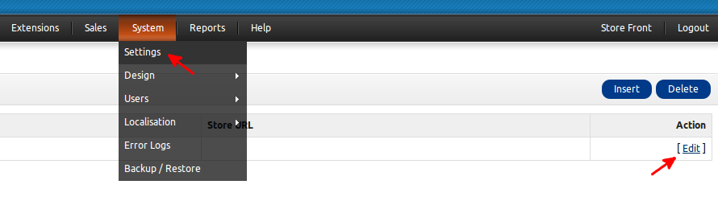
Go to "Store" tab and select "palioxis" theme from drop down menu.
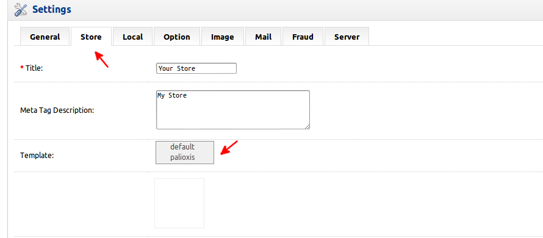
Image Settings - top
Switch to Image tab located in store settings and specify image dimensions.
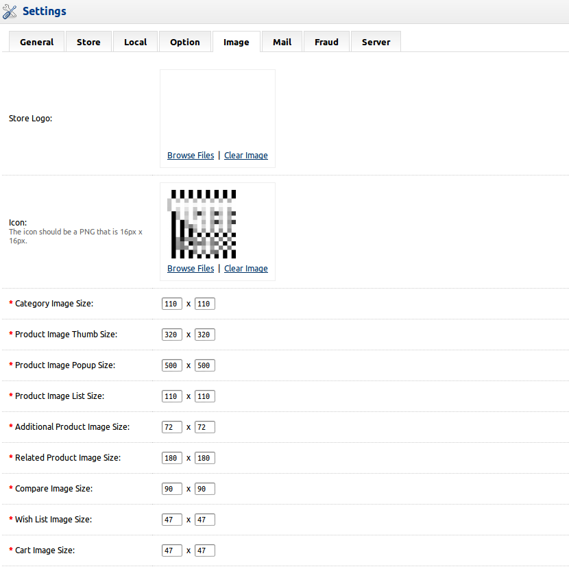
Modules - top
Go to "Modules" from "Extensions" menu, to enable and configure store modules.
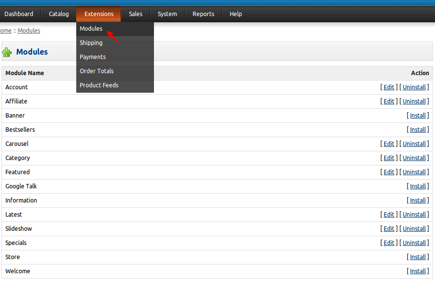
Edit settings of "Account" module.
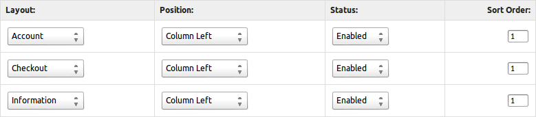
Edit settings of "Affiliate" module.
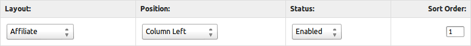
Edit settings of "Category" module.
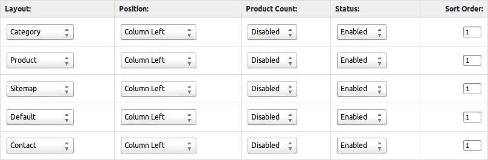
Edit settings of "Featured" module.

Edit settings of "Latest" module.
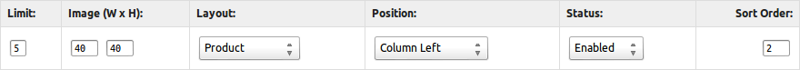
Edit settings of "Specials" module.
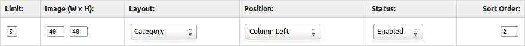
Do not activate both left and right columns on a single page as there is not enough space for both of them!
"Banners" required for "Carousel" and "Slideshow" modules.
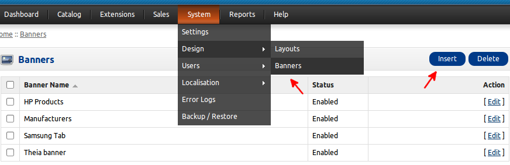
Prepare banners for "Slideshow" module. Recommended image dimensions is 980 x 491 (W x H).
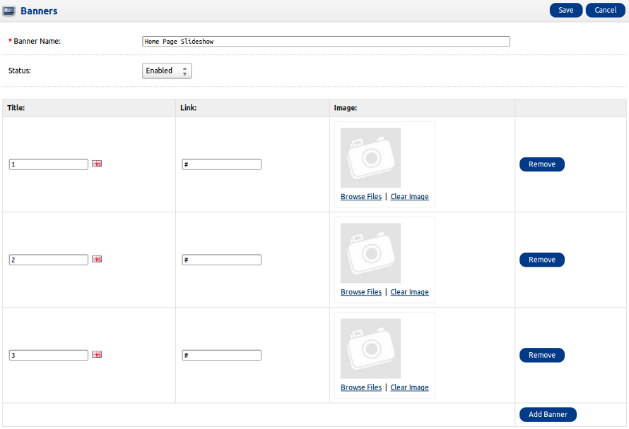
Prepare banners for "Carousel" module.
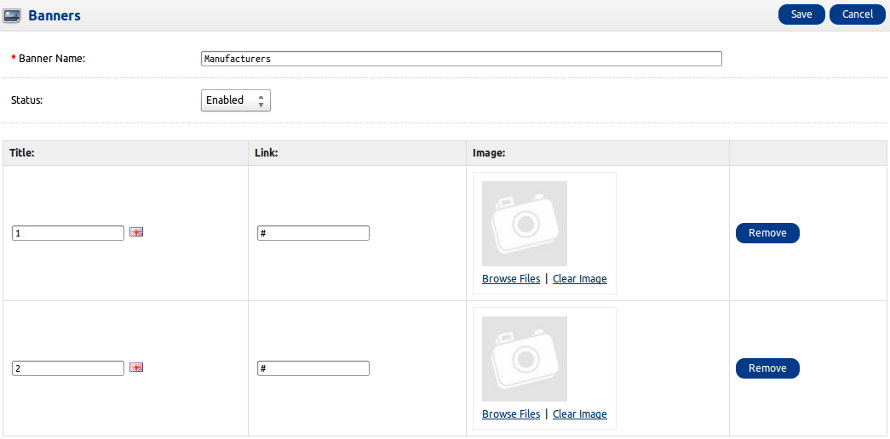
Edit settings of "Slideshow" module.

Edit settings of "Carousel" module.
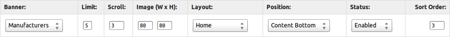
Social buttons and Contacts - top
Open footer.tpl file in you favourite editor. It's located at palioxis/template/common/footer.tpl And go to line 48. Change "#" to your social links for each social network and rss. Phone and Email on line 43 and 44.
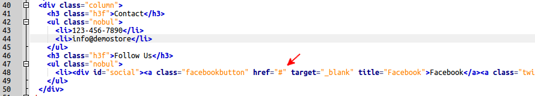
Sources and Credits - top
Social media icons by ElegantThemes